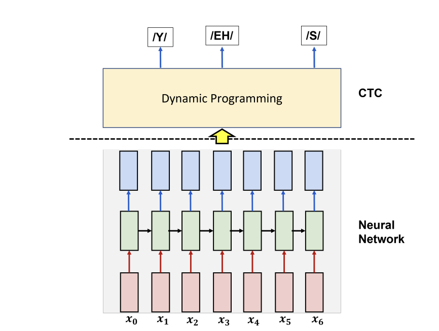
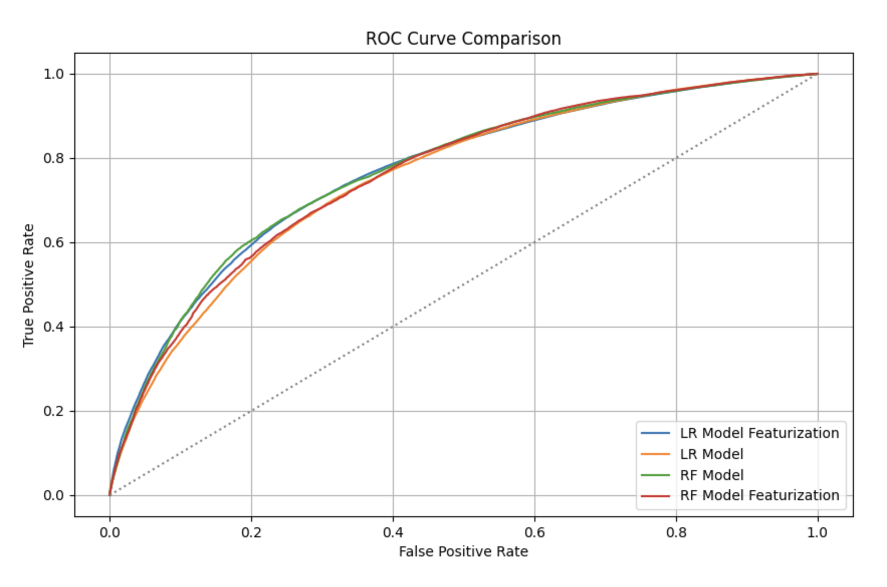
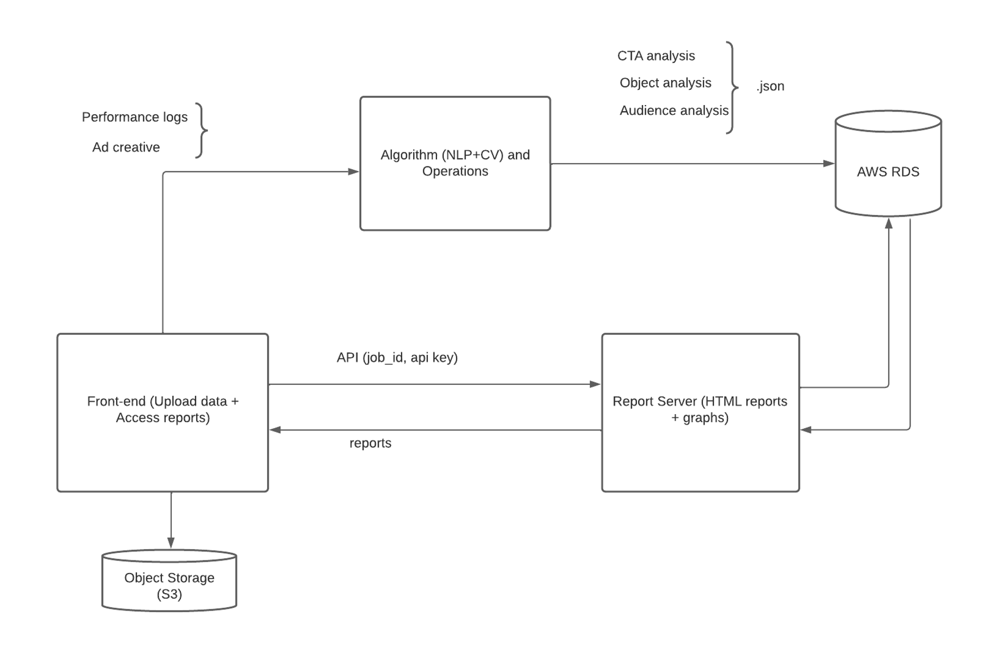
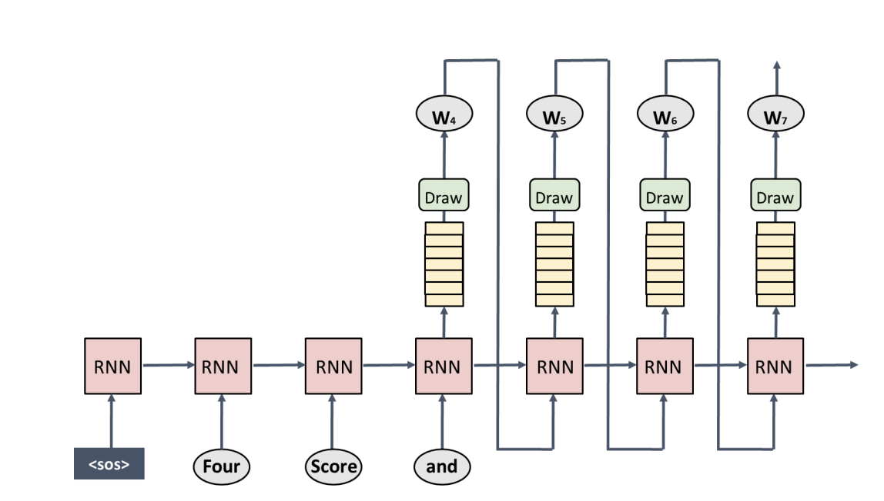
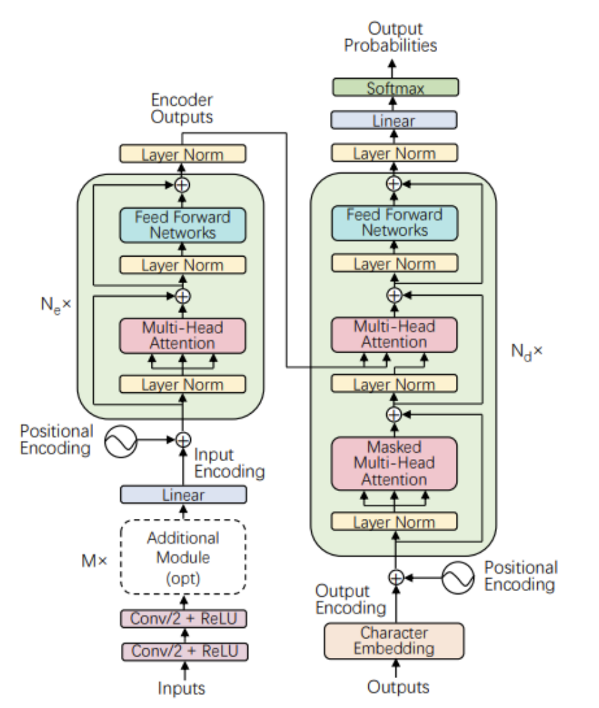

Automatic Speech Recognition (ASR)

I implemented the connectionist temporal classification (CTC) framework, which included recurrent neural networks (RNNs) and dynamic programming to handle the labeling of sequences in audio recordings, where time alignment is not predefined. This architecture managed the asynchronous timing of outputs in relation to their inputs. I achieved top 10% performance in a Kaggle competition with more than 200 participants.
Cloud-based Machine Learning

I used Apache Spark on AWS EMR to analyze the Million Song Dataset, extracting features and applying machine learning to predict song popularity. I managed data processing and storage using AWS services like EC2, EBS, and S3. This experience sharpened my skills in big data analytics, cloud computing, and machine learning, demonstrating the ability to derive actionable insights from complex data sets.

In this system design, advertisers upload their data to an S3 bucket, triggering automated report generation on CTA, object, and audience metrics. The processed data is stored as JSON in an RDS database, maintaining links to the original S3 data. We use an HTML server to serve these reports to advertisers. This workflow demonstrates my grasp of cloud services to streamline data processing and reporting.
Language Modeling and Evaluation

In this project, I implemented an attention mechanism from scratch, a fundamental component of modern Large Language Models (LLMs). I created a language model using the LSTM architecture, applying various regularization methods to boost its language processing performance (perplexity). This experience provided me with practical knowledge in both implementing and evaluating sophisticated language models.
Attention-based end to end Speech-to-Text

In this project, I customized a Transformer architecture, initially designed for machine translation, to perform speech recognition. This adaptation process deepened my understanding of the Transformer's inner workings and demonstrated its versatility across various natural language processing applications.

I built an application on Hugging Face to help users craft their interview answers. The application leverages the Retrieval-Augmented Generation (RAG) approach, integrating GPT-3.5 with a FAISS vector database and LangChain. It enables users to upload their resume and job descriptions to then generate customized interview responses in the STAR format.
Heart Rate Irregularity Prediction on Wearable Device

We developed a multimodal machine learning product on a Raspberry Pi, designed to predict heart attack risk using ECG and voice inputs from patients. This project deepened my understanding of hardware-software integration, specifically through model optimization techniques like quantization and pruning. I navigated crucial design trade-offs, balancing recall (sensitivity) with system latency and energy consumption, to ensure an efficient and effective real-time medical diagnostic tool.

In this project, we managed the deployment of a recommendation service for a movie streaming platform, catering to 1 million customers and featuring 27,000 movies. This involved not only the implementation and evaluation but also the operation and continuous monitoring of the system in a live environment. Key challenges faced were ensuring scalable deployment, maintaining system reliability, addressing model drift, and managing feedback loops, which are critical aspects of running a machine learning service in a real-world setting.